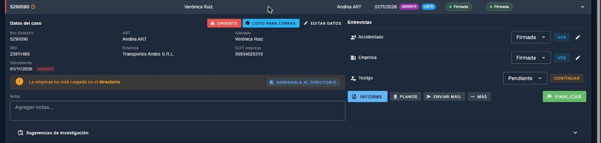

01 — Case study · Dec 2025 – presentCaso · dic 2025 – hoy
BInfo: from an insurer's email to a finished investigation report.
BInfo: del mail de la aseguradora al informe de investigación terminado.
Estudio HDB investigates workplace-accident claims for insurance companies (ARTs) in Argentina. Each case used to be assembled by hand: read the assignment email, interview the worker and the employer, write a Word report. BInfo now carries a case from the moment the insurer's email arrives until a supervisor approves the final report.
Estudio HDB investiga siniestros laborales para aseguradoras de riesgos del trabajo (ART). Cada caso se armaba a mano: leer el mail de asignación, entrevistar al trabajador y a la empresa, escribir un informe en Word. BInfo lleva hoy el caso desde que llega el mail de la ART hasta que un supervisor aprueba el informe final.



02 — ArchitectureArquitectura
One server, a handful of moving parts, each one there for a reason.
Un servidor, pocas piezas, cada una por una razón.
03 — Decisions I can defendDecisiones que puedo defender
The interesting part isn't the stack. It's what breaks.
Lo interesante no es el stack. Es lo que se rompe.
Never trust an LLM quote
No confiar en una cita del LLM
The model backs each suggestion with quotes from the interviews. Before showing them, the backend checks that every quote actually exists in the source text; one that doesn't is downgraded instead of being displayed as evidence.
El modelo respalda cada sugerencia con citas de las entrevistas. Antes de mostrarlas, el backend verifica que cada cita exista de verdad en el texto; la que no aparece se degrada en vez de mostrarse como evidencia.
Templates that can't break silently
Plantillas que no se rompen en silencio
Word splits text into "runs" when you save, which can cut a template tag in half. That used to surface only when an investigator couldn't generate a report. The suite now compiles all 29 templates and checks their required tags, so a broken one fails in seconds, before deploy.
Word parte el texto en "runs" al guardar, y eso puede cortar un tag de la plantilla a la mitad. Antes se descubría cuando un investigador no podía generar su informe. Ahora los tests compilan las 29 plantillas y revisan sus tags: una rota falla en segundos, antes del deploy.
Staging that can't touch the real world
Un staging que no puede tocar el mundo real
The test environment runs on an anonymized copy of production, with a test mode that blocks email, the insurer's portal and the LLM. The safety lives in configuration, not in remembering not to click the wrong button.
El entorno de prueba corre sobre una copia anonimizada de producción, con un modo de prueba que bloquea mails, el portal de la ART y el LLM. La seguridad está en la configuración, no en acordarse de no tocar el botón equivocado.
Respect the other side's limits
Respetar los límites del otro lado
Reading company replies once exhausted the per-user Gmail quota and delayed real emails. The poller now caps reads per cycle, remembers what it already read, and only advances its window when a cycle completes.
Leer las respuestas de las empresas llegó a agotar la cuota de Gmail por usuario y demoró mails reales. Ahora el poller tiene un tope de lecturas por ciclo, recuerda lo ya leído y solo avanza su ventana cuando el ciclo termina completo.
Security for a small team
Seguridad para un equipo chico
JWT sessions with per-user revocation, two-factor login by email, login auditing with alerts on suspicious attempts, and OAuth tokens encrypted at rest.
Sesiones JWT revocables por usuario, login en dos pasos por mail, registro de ingresos con avisos ante intentos sospechosos y tokens OAuth cifrados en la base.
04 — How I workCómo trabajo
Small changes, shipped often, to people I talk to every day.
Cambios chicos, seguido, para gente con la que hablo todos los días.
I get requests straight from the people who use the system, and I ship often. The process exists to make that safe, not slow.
Los pedidos me llegan directo de la gente que usa el sistema, y subo cambios seguido. El proceso está para que eso sea seguro, no lento.
Plan first
Plan primero
Which files change and why, agreed before writing code.
Qué archivos cambian y por qué, acordado antes de escribir código.
One problem per change
Un problema por cambio
1,424 commits in a year, most of them small enough to revert alone.
1.424 commits en un año, casi todos lo bastante chicos para revertirse solos.
Test the logic
Testear la lógica
Business rules live in pure functions with Vitest coverage.
Las reglas de negocio viven en funciones puras, cubiertas con Vitest.
Try it in staging
Probar en staging
Anonymized data, outbound actions blocked.
Datos anonimizados, envíos al exterior bloqueados.
Deploy & document
Deploy y documentar
git pull + pm2 on the VPS; what wasn't verified gets written down as unverified.
git pull + pm2 en el VPS; lo que no se verificó queda escrito como no verificado.
- Vue 3
- Pinia
- Vuetify
- Node.js
- Express
- MySQL
- Sequelize
- n8n
- LLM APIs
- Google APIs
- Server-Sent Events
- docxtemplater
- pdf-lib
- Vitest
- Linux
- nginx
- pm2
- Git
05 — Other workOtros trabajos
Smaller things
Cosas más chicas
- Estudio HDB landingLanding de Estudio HDB↗The firm's public site, built with Astro.El sitio público del estudio, hecho con Astro.
- Museo Virtual↗University team project (distributed systems): Git branches and code review in a group.Proyecto en equipo de la facultad (sistemas distribuidos): ramas de Git y code review en grupo.
06 — ContactContacto
Let's talk.
Hablemos.
jimpate0@gmail.comBInfo's code is private (it belongs to the firm and handles health and personal data), so there's no public repo or live demo. I'm happy to walk through the architecture and the code in an interview.
El código de BInfo es privado (es del estudio y maneja datos de salud y personales), así que no hay repo público ni demo en vivo. Lo muestro con gusto en una entrevista.